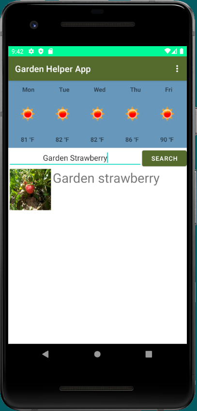

Garden Data
Mobile Application
Purpose
The purpose of this project is to build an app that gardeners can use to get more information about plants that they would grow in their garden such as the best time of year to grow, the ph level of soil recommended, or the amount of water needed.
Objective
- Develop a Mobile Application to allow users easy access while they are out gardening
- Implementing Fragments to create a user friendly mobile application
- Utilize Weather API to allow real-time weather forecast
- Utilize Trefle API to gain access to an open source plant database
Project Demostration

A simple design showing the real time weather forecast for the next five days at the top. There is a search bar where users can enter any plants and a list of plants will be pulled up. Users can then select a plant to learn more about it in the overflow menu at the top right.